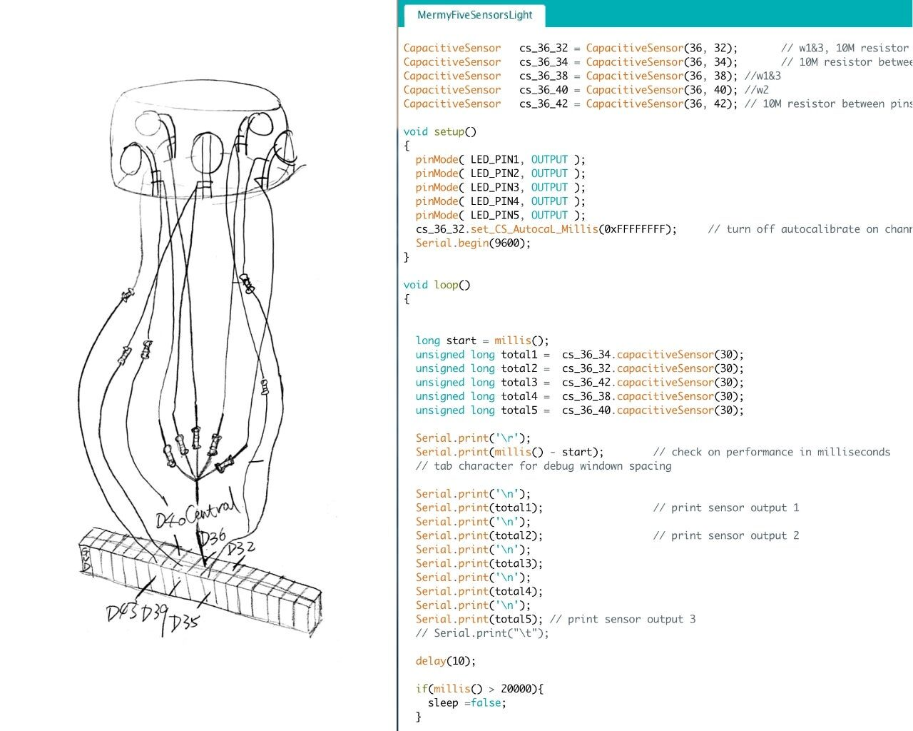
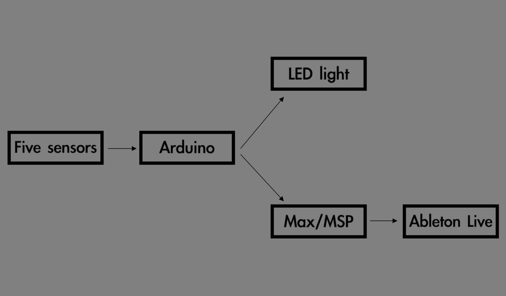
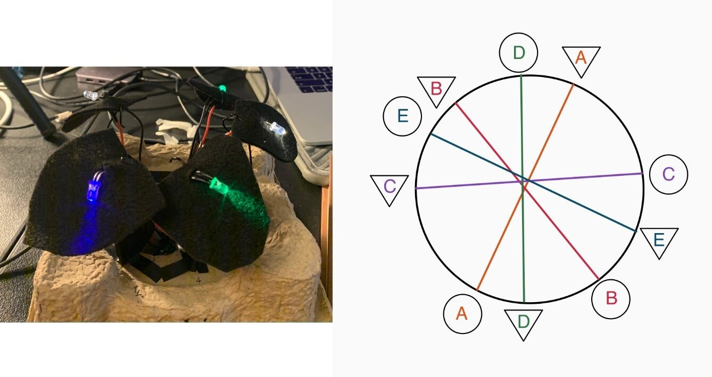
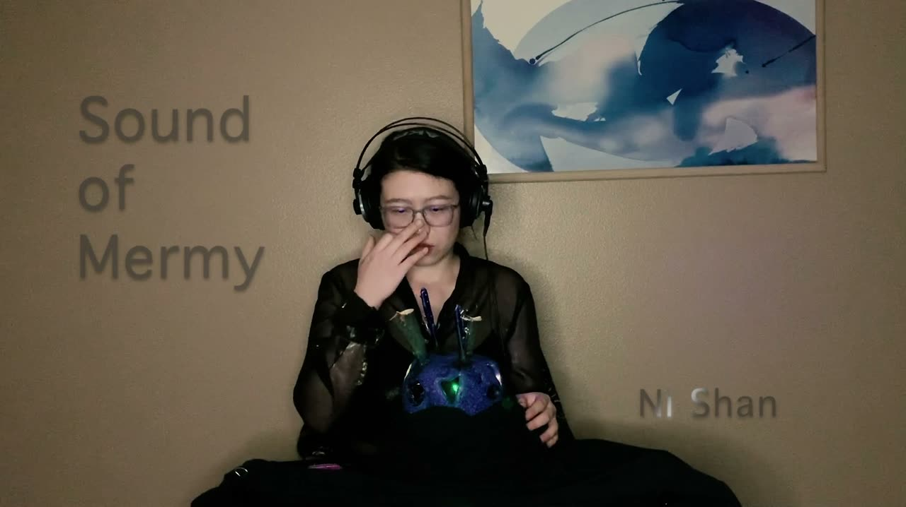

Mermy: An Augmented Ceramic Instrument as Performative Apparatus
Mermy: An Augmented Ceramic Instrument as Performative Apparatus
Shan Ni - China University of Geosciences(Wuhan) and California Institute of the Arts, Li Zhou - China University of Geosciences(Wuhan)
1. PubPub Link
https://nime.pubpub.org/pub/s9yccjwh/draft?access=taymp8h6
2.Conference Abstraction
In this paper, the authors present the design process of “Mermy”, an augmented instrument made of ceramic. The paper discusses the fundamental concepts behind the object and the implications of ceramic-based instrument-making. The instrument is described both in terms of acoustic playing techniques and the extended possibilities brought by its embedded technology, such as live processing, sensor controls, and reactive lighting.
3.Program Description
- Showcase description

Physic Body of Mermy
Mermy is an augmented ceramic instrument shaped as a female marine creature, acting as the player's avatar during the performance. The physical body of Mermy offers multiple playing possibilities as an instrument: idiophone, chordophone, and aerophone all together. An embedded contact microphone is used to pick up the acoustic sound, for both amplification and processing purpose. Five windows around the body serve as tangible sensors, which control digital treatments and trigger LED lights from within.
This music performance is an illustration of an uncanny world through the sound of Mermy. Interactions between the performer and the instrument are subtle, precise, and intimate, adding to the immersive, ritualistic atmosphere of the piece.
- Technical introduction
Mermy’s physical controllers rely on conductive ink. On the outside, it covers the edges of the five circular windows (used as tangible sensors) and extends to the inner surface where it connects to wires with conductive tapes. Each coated window was connected to the Arduino that turned them into fully-fledged capacity sensors.


Connection layout and the Arduino code handling the 5 capacity sensors
Sensor data is sent from the Arduino to Max/MSP through the serial port, and is rescaled into two distinct dimensions, highlighting either light touch or heavy touch. These programming procedures in Max/MSP allowed defining 18 control channels in total, thus becoming available for sound treatments mapped through MIDI, into any other DAW such as Ableton Live.


Control signal workflow
For the purpose of adding the visual response to the performance, five LED lights were placed inside of Mermy, near the 5 remaining triangular windows. The same capacitive sensors are used to affect their brightness levels. Each light is placed on the opposite side of the instrument from its controlling (circular) sensor window, in order to prevent hand gesture interferences.


LED lights testing and light control mapping
4. Performance - Sound of Mermy

▶5. ACKNOWLEDGEMENTS
The authors would like to thank Carol Sun, Clay Chaplin, and Julien Vincenot.